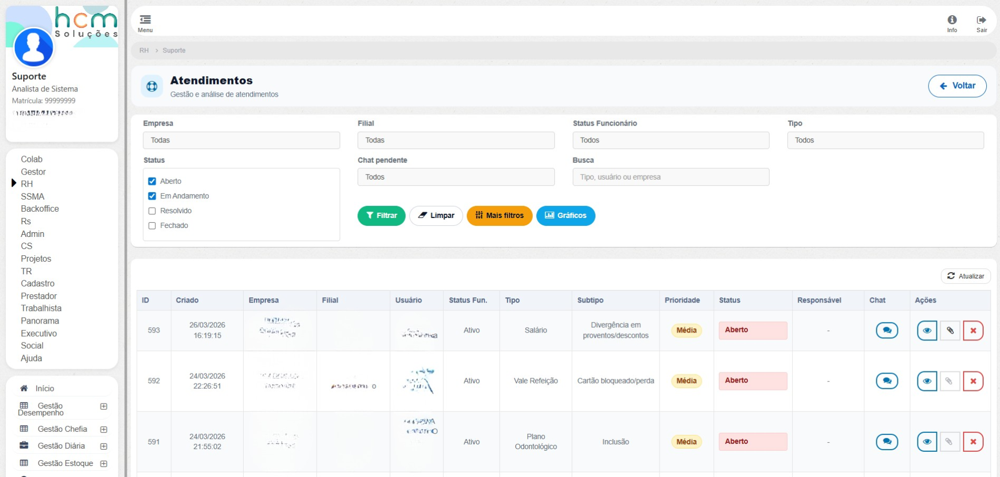
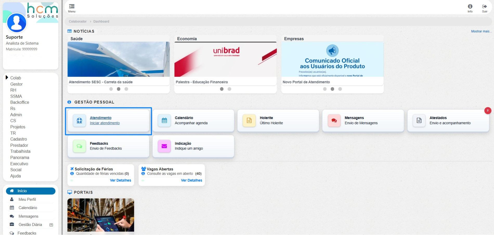
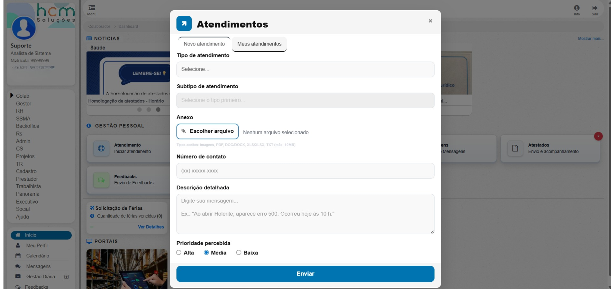
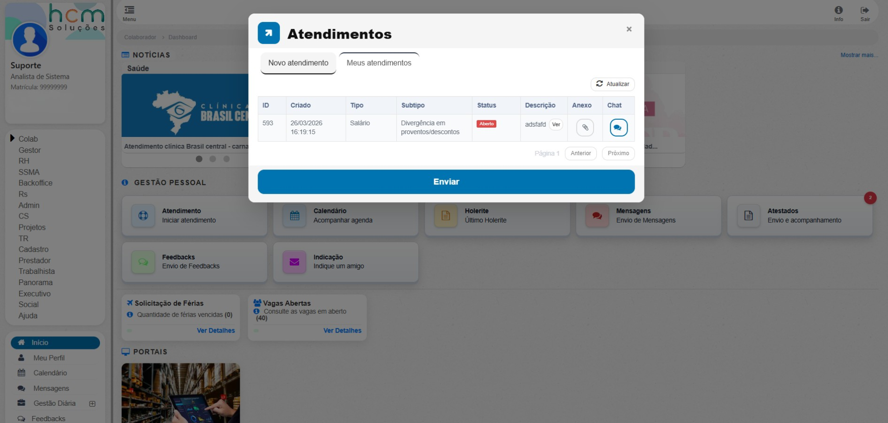
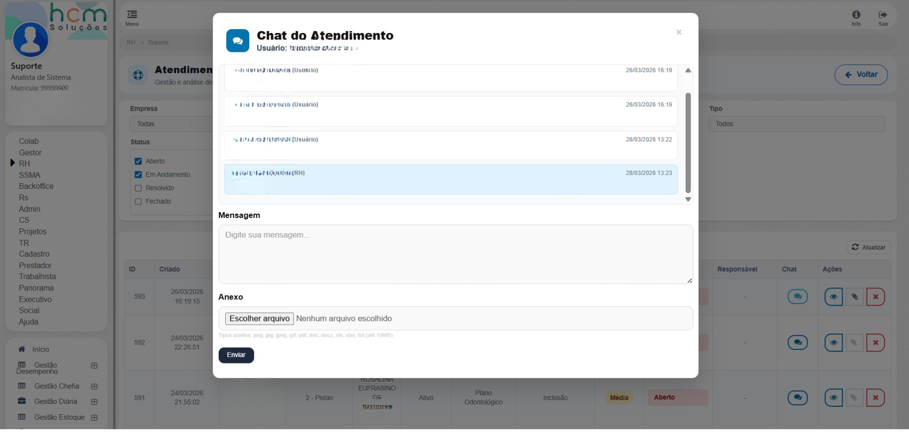
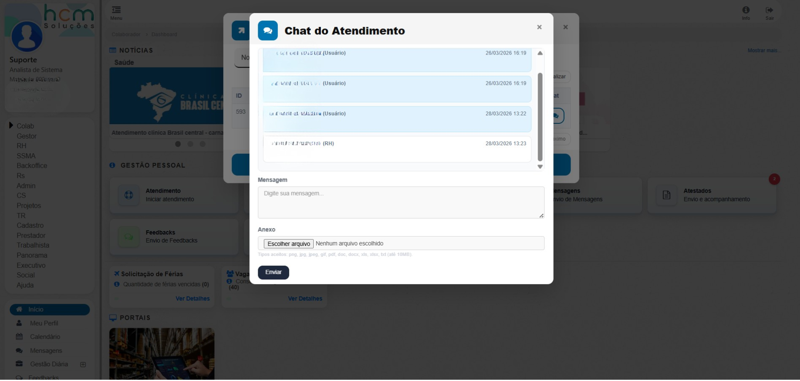
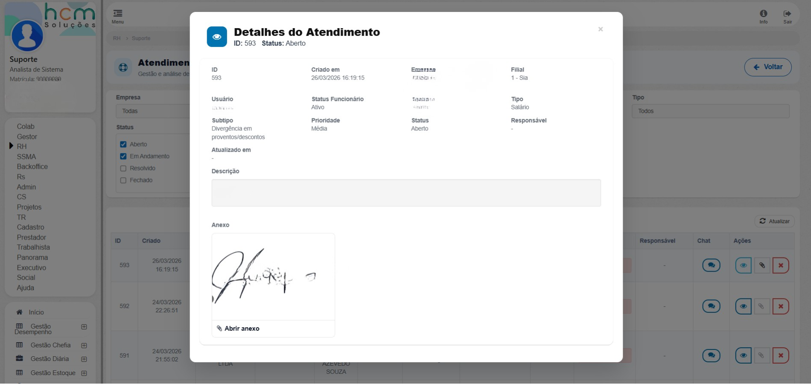
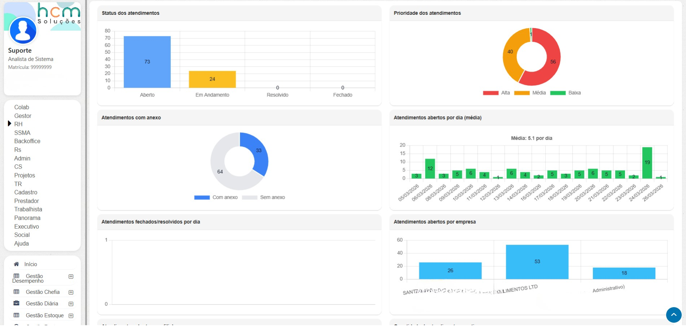

Case detalhado
Central de atendimentos com abertura, acompanhamento e painel analítico por perfil
Módulo corporativo para registro de solicitações internas, acompanhamento via chat e gestão operacional com visão consolidada para suporte e atendimento.
A solução foi organizada em duas frentes: experiência do colaborador, com abertura e acompanhamento dos próprios chamados, e experiência administrativa, com filtros operacionais, ações em linha, paginação e dashboard analítico por perfil.

Fluxo direto no dashboard do colaborador com formulário dinâmico, prioridade, contato, descrição e anexo.
Painel administrativo com filtros compostos, status, responsável, busca textual, paginação e ações em linha.
Indicadores de status, prioridade, anexo, volume por dia, distribuição por empresa e tempo médio até fechamento.
Galeria
Visões da funcionalidade







Contexto e problema
A funcionalidade foi inserida em um sistema web corporativo com múltiplos perfis de acesso, incluindo colaborador e time administrativo.
O desafio era evitar a fragmentação do fluxo de atendimento, que normalmente separa abertura, acompanhamento e visão gerencial em pontos desconectados.
Essa fragmentação prejudica tempo de resposta, controle de SLA, rastreabilidade de pendências e capacidade analítica para priorização do suporte.
Solução implementada
- Dashboard do colaborador com acesso rápido ao módulo e badge de mensagens não lidas.
- Modal com duas abas para abertura de novo atendimento e acompanhamento dos atendimentos do próprio usuário.
- Formulário dinâmico com tipo, subtipo, prioridade, contato, descrição e upload de anexo.
- Painel administrativo com filtros por empresa, filial, status, tipo, prioridade, responsável, período, busca textual e chat pendente.
- Listagem paginada com ações de detalhamento, chat, atualização de status e exclusão.
- Dashboard analítico alimentado pelos mesmos filtros operacionais da lista para manter consistência dos indicadores.
Tecnologias utilizadas
- Back-end em PHP com arquitetura MVC.
- Front-end em HTML, CSS, JavaScript, jQuery e Bootstrap.
- Banco relacional com acesso via query builder.
- Carregamento assíncrono com AJAX para listagem, chat, status e métricas.
- Biblioteca de gráficos em canvas carregada sob demanda para o painel analítico.
Desafios técnicos
- Controle de acesso por escopo organizacional, resolvido com empresas permitidas por vínculo perfil-usuário.
- Formulários e filtros com alta variabilidade, tratados por estrutura padronizada e atualização dinâmica de subtipos.
- Convergência entre operação e analytics, resolvida com reaproveitamento do mesmo conjunto de filtros para lista e gráficos.
- Operação contínua com paginação, refresh, chips de filtros ativos e ações em linha para reduzir atrito operacional.
Resultados e boas práticas
O projeto entregou uma operação mais rastreável, responsiva e orientada a dados, com melhor visibilidade de pendências, menor fricção para abertura e acompanhamento de chamados e mais capacidade gerencial para priorização.
Mais clareza sobre pendências de atendimento e chat não lido.
Controle de escopo e estados operacionais padronizados por perfil.
Carregamento assíncrono, paginação e gráficos sob demanda para melhor fluidez.
Componentes reutilizáveis de filtros, alertas, chips e ações com fluxo de eventos padronizado.